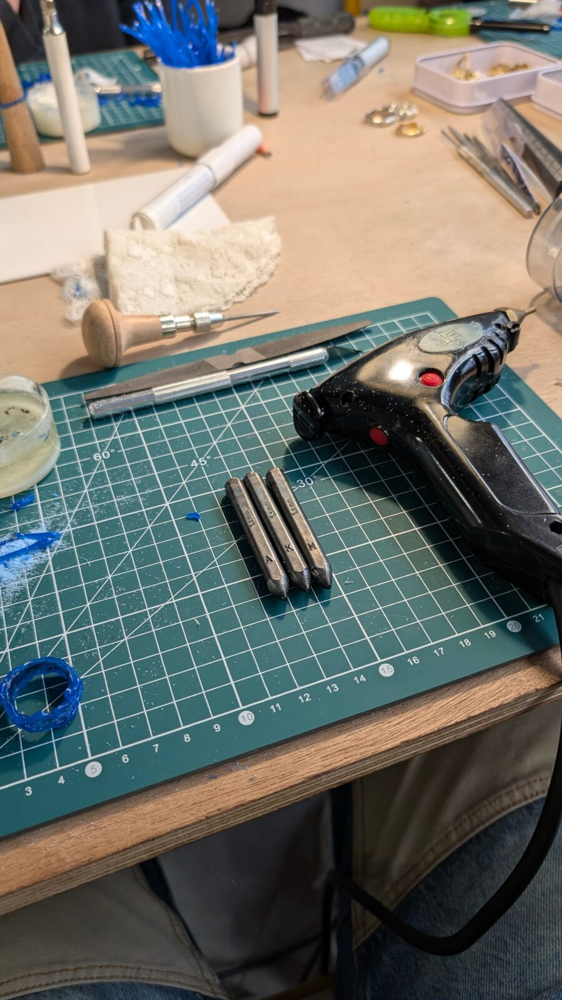
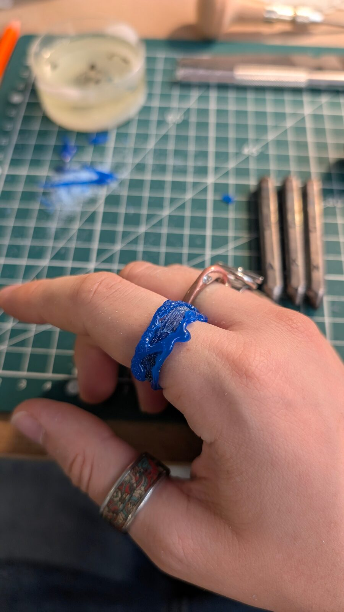
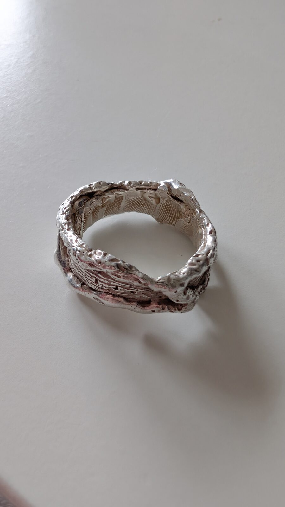
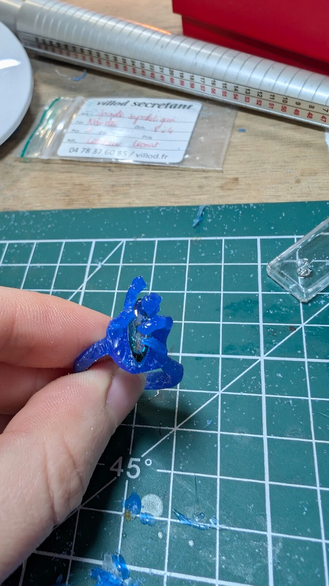
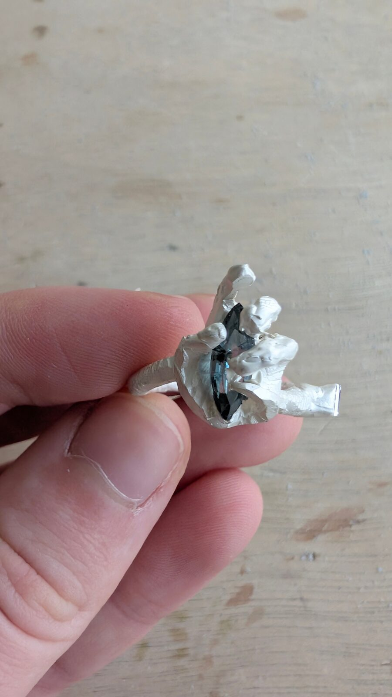
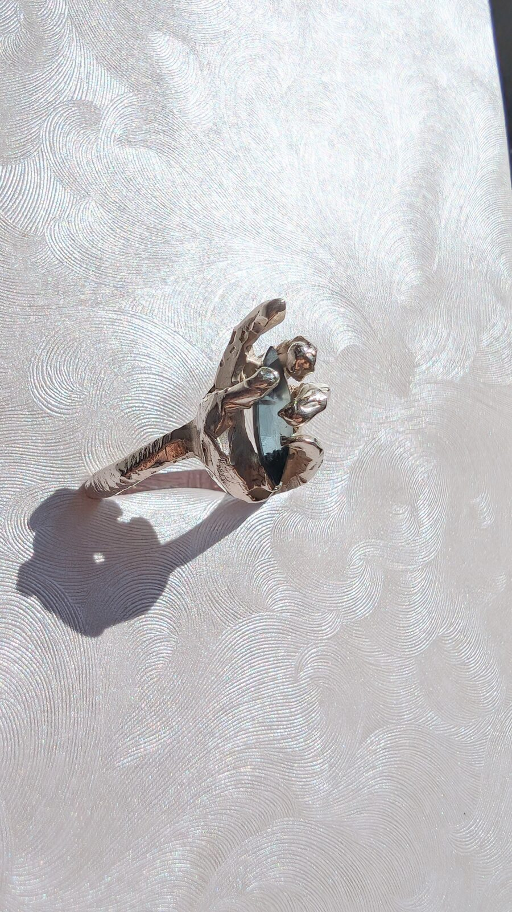
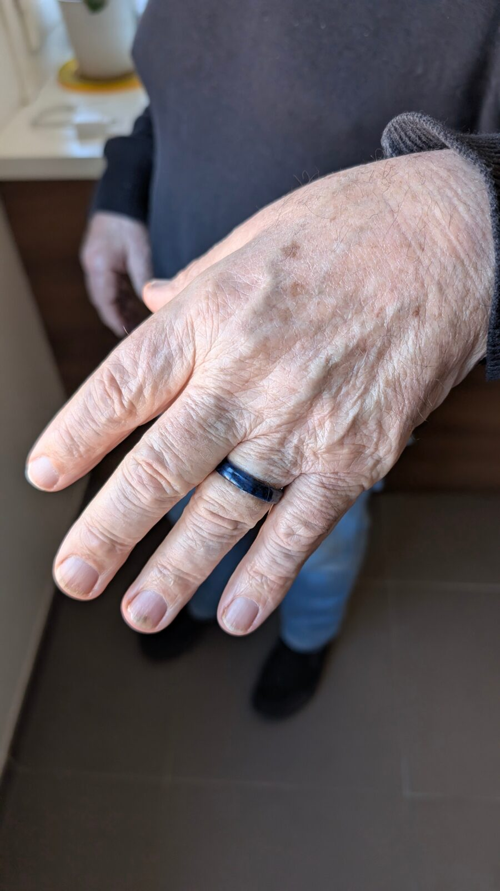

Création de bijoux perso
La bijouterie est devenue une véritable passion au cours de mon stage. Au départ, ce n’était pas mon domaine, mais en observant le travail de ma responsable de stage, j’ai rapidement été inspirée et captivée par cet univers. Elle m’a confié mes premières missions de création de bijoux, et j’ai immédiatement ressenti une connexion : le temps passait très vite, je me sentais pleinement stimulée et j’avais le sentiment d’avoir trouvé ma place. Ce que j’aime dans ce métier, c’est l’équilibre entre créativité et technique, la précision nécessaire à chaque geste et la possibilité de donner vie à des pièces uniques qui reflètent un univers et des idées.
Création d’une première bague en atelier
J’ai participé à un atelier de création de bague en cire de bijoutier. Cet atelier a duré 2h30 et s’est déroulé en groupe. J’ai pu découvrir pour la première fois le travail de la cire ainsi que les outils mis à disposition.
-

Outils
De nombreux outils étaient disponibles lors de l’atelier : pistolets à cire, outils de sculpture, pointes, limes, permettant de modeler et affiner la matière.
-

Sculpture en cire de bijoutier
J’ai choisi de partir sur un modèle assez large, avec une partie lisse et une partie texturée. À l’intérieur, j’y ai intégré des empreintes et des lettres.
-

Bijou fini
Voici le résultat final, en argent massif.
Création d’une bague main avec pierre de synthèse
J’ai réalisé une bague originale en forme de main à partir de cire de bijoutier. Cette matière m’a permis de sculpter et de modeler chaque détail afin d’obtenir précisément le rendu souhaité. La main a été conçue pour accueillir en son centre une pierre de synthèse, créant ainsi un bijou unique et expressif.
-

Sculpture et intégration de la pierre
La bague a été entièrement façonnée en cire, en sculptant les doigts, la paume et les détails de la main. Un emplacement précis a été prévu au centre pour intégrer la pierre, assurant un ajustement harmonieux.
-

Fonte en argent
La pièce en cire a ensuite été envoyée chez le fondeur, où elle a été coulée en argent massif, transformant la sculpture en un bijou solide et durable.
-

Bijou fini
Après polissage et finitions, la bague prend vie dans sa forme finale, prête à être portée, avec la pierre mise en valeur par la main sculptée.
Création de la bague de mariage
de mon grand-père
J’ai eu la chance de réaliser la bague de mariage de mon grand-père. J’avais carte blanche, avec comme seul critère un anneau assez large. Le principal défi était de concevoir un bijou adapté à une très grande taille de doigt.
Il m’a confié ce projet car il ne trouvait pas de bague à sa taille en magasin.
La pièce n’est pas encore finalisée, mais elle sera fondue en vermeil (argent massif plaqué or).

-
Pourquoi cela me plaît autant ?
La bijouterie me passionne car elle combine créativité, technique et minutie. Chaque pièce est un équilibre entre conception artistique et travail manuel, ce qui me permet d’exprimer mon univers tout en explorant de nouvelles techniques. J’aime le fait de donner vie à des objets tangibles, uniques et porteurs de sens. Cette pratique m’inspire et me stimule constamment.